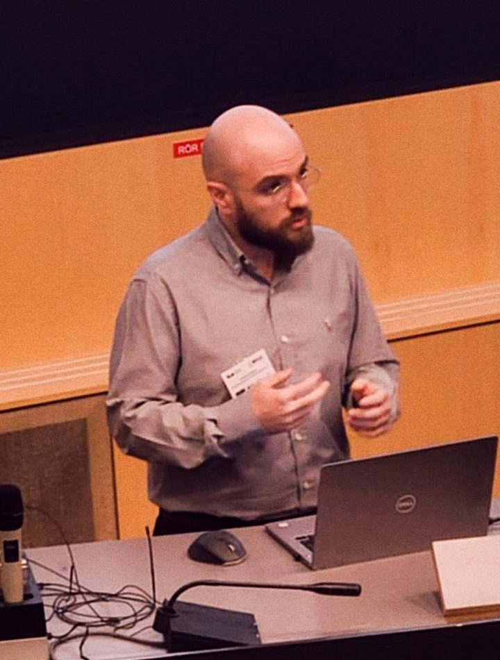
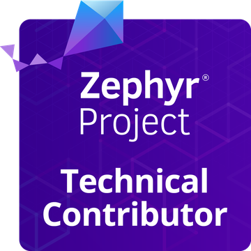

2023 – nowAthens
IoT Department Director · Embedded Systems Architect
DeepSea Technologies (Nabtesco Group)
Athens · Hamburg
Systems architect and researcher, working where embedded systems, networks and AI meet.
I design the hardware and software of resource-constrained systems, from PCBs and RTOS firmware to inference distributed across edge devices. I lead the IoT department at DeepSea Technologies, am completing a PhD at AUEB on partitioning neural networks and LLMs for the edge, and build SynapticOS, an AI-native operating system for microcontrollers with on-die NPUs.

Now
The embedded platform behind HyperPilot, DeepSea's DNV type-approved autonomous speed-control system: Yocto-based Linux distributions, wireless sensor networks, and compliance with IEC 60945, IEC 61162-450, IEC 61174, IEC 62923, IEC 62443 and IACS E26/E27.
Partitioning DNNs and LLMs for low-latency inference across resource-constrained edge devices, at AUEB with Prof. Iordanis Koutsopoulos. Latest result: HeadSplit, IEEE SPAWC 2026.
An inference-first RTOS for Cortex-M33 microcontrollers with on-die NPUs, built on Zephyr for the NXP FRDM-MCXN947. Three architecture papers on arXiv; phase 5 of 6 complete.

Bug fixes reproduced on the FRDM-MCXN947 and sent upstream: build system and sysbuild, NXP MCX board and devicetree support, flash and USB drivers, driver tests. Ten pull requests in October 2026, five merged so far. Recognised by The Linux Foundation with the Zephyr Technical Contributor badge. Read what I learned.
Selected work
AI-native operating system for microcontrollers. Tensor-aware memory arena, NPU-aware scheduling and model lifecycle as OS services rather than application code.
Attention-head partitioning and inter-layer speculation so every device runs each layer's attention in parallel. Reference code for the SPAWC 2026 paper, on Raspberry Pi clusters over WiFi.
Zero-allocation C11 inference library for ARM Cortex-M and Cortex-A: Dense, Conv, LSTM, GRU and Transformer layers with INT8 quantisation and a deterministic graph runtime.
Multi-domain emulation for ground, aerial and surface robots. Unmodified ROS 2 stacks run in containers against Gazebo, driven by scenario tests with pass/fail assertions.
Cross-platform NMEA 0183 and Signal K vessel data simulator. Streams position, heading, depth, wind, engine and AIS data over serial, TCP, UDP and WebSocket.
Header-only C++23 state-estimation framework: EKF, UKF and complementary filters behind one concept, with Mahalanobis outlier gating and compile-time sensor composition.
Writing
How I picked my first issues, what maintainers asked for, and the habits that stuck after ten pull requests to a large RTOS project.
What goes wrong when a neural network is bolted onto a scheduler built for control loops, and the design decisions behind SynapticOS.
A small language model does not fit one edge device. Lessons from a WiFi testbed, a simulator and two papers on partitioning inference.
Research
Experience
DeepSea Technologies (Nabtesco Group)
Athens University of Economics and Business, Research Center and Department of Informatics
Plaython Inc.
Prisma Electronics SA
University of Leeds, I3S Ultrasound Group · deSoutter Medical Group